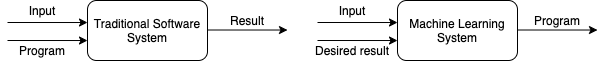
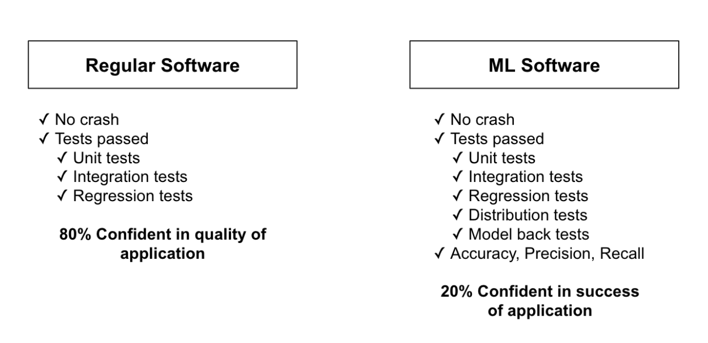

Xin chào mọi người, lại là mình đây, hôm nay chúng mình sẽ cùng nhau tìm hiểu xem để kiểm thử một hệ thống Machine Learning (ML) thì nên làm những gì nào!
Thêm cái meme trước khi bắt đầu bài viết như mọi khi phát đã.
Kiểm thử hệ thống ML dễ như ăn bánh?
Khác với các hệ thống software truyển thống: một ông developer ngồi nghĩ ra các rule, và lập trình bằng Python, Java, hoặc… LOLCODE, thì ML model sẽ tự sinh ra các rule sử dụng dữ liệu được cung cấp. Điều này đương nhiên là tốt, vì không phải rule nào ông developer cũng nghĩ ra được, tuy nhiên nó cũng có mặt trái của nó: rule được sinh ra có thể thay đổi, theo hướng tốt, xấu, hoặc bị BUG rồi các ông ạ :). Điều này dẫn tới việc kiểm thử và debug một hệ thống ML không hề đơn giản.
Áp dụng kiểm thử của hệ thống software truyền thống
Thông thường có 2 loại kiểm thử phần mềm:
- Functional Testing: kiểm tra xem hệ thống đã đảm bảo yêu cầu về chức năng chưa, ví dụ ấn tắt windows update mãi mà nó vẫn update thì là fail rồi :)
- Non-functional Testing: kiểm tra xem hệ thống có đáp ứng được kỳ vọng của khách hàng không, ví dụ tất cả người trên thế giới cùng ấn nút tham gia group MLOps VN thì group không được sập chả hạn.
Functional Testing
Thông thường loại này bao gồm:
Unit testing: test từng module nhỏ
Integration testing: test một module lớn bao gồm nhiều module nhỏ để đảm bảo khi kết hợp không xảy ra vấn đề gì
Mẹo nhỏ: Theo nguyên tắc KISS, hãy luôn cố gắng bẻ vấn đề thành nhiều module đủ nhỏ và đủ dễ hiểu.
Ví dụ dưới đây được trích từ Machine learning mastery blog cho thấy tác giả áp dụng rất tốt nguyên tắc này, qua việc tác giả đã cố gắng sử dụng hàm nhiều nhất có thể, ví dụ
train_test_split,accuracy_scorevàconfusion_matrix, khi đó chuyện test và debug sẽ dễ dàng hơn rất nhiều.1
2
3
4
5
6
7
8
9
10
11
12
13
14
15
16
17
18
19
20
21
22
23
24# make predictions
from pandas import read_csv
from sklearn.model_selection import train_test_split
from sklearn.metrics import classification_report
from sklearn.metrics import confusion_matrix
from sklearn.metrics import accuracy_score
from sklearn.svm import SVC
# Load dataset
url = "https://raw.githubusercontent.com/jbrownlee/Datasets/master/iris.csv"
names = ['sepal-length', 'sepal-width', 'petal-length', 'petal-width', 'class']
dataset = read_csv(url, names=names)
# Split-out validation dataset
array = dataset.values
X = array[:,0:4]
y = array[:,4]
X_train, X_validation, Y_train, Y_validation = train_test_split(X, y, test_size=0.20, random_state=1)
# Make predictions on validation dataset
model = SVC(gamma='auto')
model.fit(X_train, Y_train)
predictions = model.predict(X_validation)
# Evaluate predictions
print(accuracy_score(Y_validation, predictions))
print(confusion_matrix(Y_validation, predictions))
print(classification_report(Y_validation, predictions))Regression testing: kiểm tra lại toàn bộ chức năng của hệ thống mỗi khi có thay đổi của một hoặc vài chức năng nào đó
Smoke testing: chạy một bài test cơ bản với chức năng tối thiểu để xem hệ thống sẵn sàng cho việc test chưa
Một ví dụ đơn giản: Bắt đầu kiểm tra một hệ thống bóng đèn, ấn nút phát khói (smoke) bốc lên nghi ngút thì khỏi test tiếc gì thêm.
Non-functional Testing
- Load Testing: xác định độ chịu tải, SLA của hệ thống
- Stress Testing: đánh giá hành vi của hệ thống tại các điều kiện không lường trước, ví dụ một phần hệ thống đột nhiên shutdown thì phản hồi có chấp nhận được không
Hệ thống ML cần kiểm thử thêm những gì?
Khác với phần mềm truyền thống: vượt qua nhiều test case (với độ coverage cao) có thể đảm bảo hệ thống sẽ hoạt động tốt, thì ở ML chúng ta cần nhiều hơn thế.
Tài liệu tham khảo
[1] https://serokell.io/blog/machine-learning-testing
[2] https://developers.google.com/machine-learning/testing-debugging/common/overview
[3] Emmanuel Ameisen, Building Machine Learning Powered Applications: Going from Idea to Product
[4] https://www.jeremyjordan.me/testing-ml/
[5] https://homes.cs.washington.edu/~marcotcr/acl20_checklist.pdf
[6] https://fontysblogt.nl/software-engineering-for-machine-learning-applications/
[7] https://futurice.com/blog/differences-between-machine-learning-and-software-engineering
[8] https://www.geeksforgeeks.org/differences-between-functional-and-non-functional-testing/